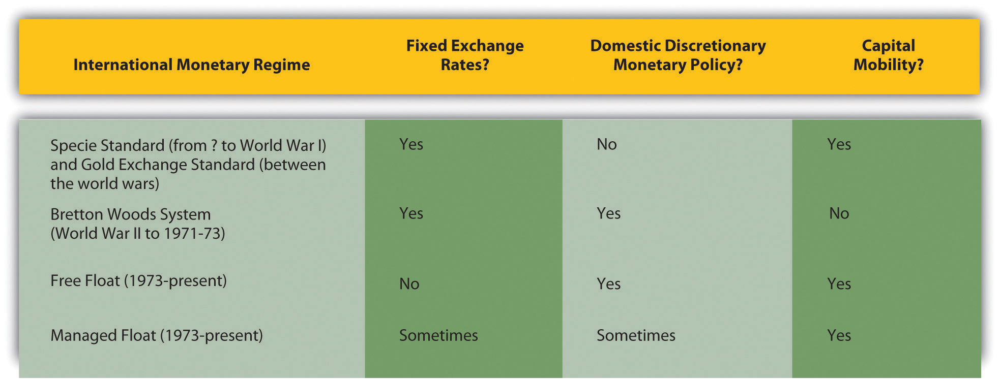
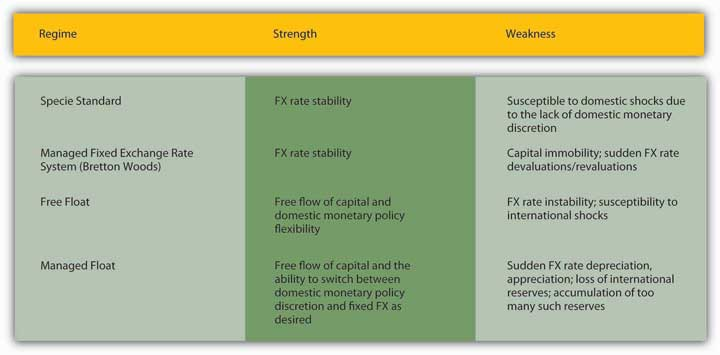

The foreign exchange (foreign exchange rate (FX or forex)The price of one currency in terms of another.) market described in Chapter 18 "Foreign Exchange" is called the free floating regime because monetary authorities allow world markets (via interest rates, and expectations about relative price, productivity, and trade levels) to determine the prices of different currencies in terms of one another. The free float, as we learned, was characterized by tremendous exchange rate volatility and unfettered international capital mobility. It is also characterized by national central banks with tremendous discretion over domestic monetary policy. The free float is not, however, the only possible international monetary regime. In fact, it has pervaded the world economy only since the early 1970s, and many nations even today do not embrace it. Between World War II and the early 1970s, much of the world (the so-called first, or free, world) was on a managed, fixed-FX regime called the Bretton Woods System (BWS)A system of fixed exchange rates based on gold and the USD used by most of the world’s free (noncommunist) countries in the quarter century after World War II. . Before that, many nations were on the gold standard (GS)A fixed exchange rate regime based on gold. , as summarized in Figure 19.1 "The trilemma, or impossible trinity, of international monetary regimes".
Figure 19.1 The trilemma, or impossible trinity, of international monetary regimes
Note that those were the prevailing regimes. Because nations determine their monetary relationship with the rest of the world individually, some countries have always remained outside the prevailing system, often for strategic reasons. In the nineteenth century, for example, some countries chose a silver rather than a gold standard. Some allowed their currencies to float in wartime. Today, some countries maintain fixed exchange rates (usually against USD) or manage their currencies so their exchange rates stay within a band or range. But just as no country can do away with scarcity or asymmetric information, none can escape the trilemma (a dilemma with three components), also known as the impossible trinity.
In an ideal world, nations would like to have fixed exchange rates, capital mobility, and monetary policy discretion at the same time in order to reap their respective benefits: exchange rate stability for importers and exporters, liquid securities markets that allocate resources to their best uses globally, and the ability to change interest rates in response to foreign and domestic shocks. In the real world, however, trade-offs exist. If a nation lowers its domestic interest rate to stave off a recession, for example, its currency (ceteris paribus) will depreciate and hence exchange rate stability will be lost. If the government firmly fixes the exchange rate, capital will emigrate to places where it can earn a higher return unless capital flows are restricted/capital mobility is sacrificed.
Figure 19.2 Strengths and weaknesses of international monetary regimes
As Figure 19.1 "The trilemma, or impossible trinity, of international monetary regimes" shows, only two of the three holy grails of international monetary policy, fixed exchange rates, international financial capital mobility, and domestic monetary policy discretion, have been simultaneously satisfied. Countries can adroitly change regimes when it suits them, but they cannot enjoy capital mobility, fixed exchange rates, and discretionary monetary policy all at once. That is because, to maintain a fixed exchange rate, a monetary authority (like a central bank) has to make that rate its sole consideration (thus giving up on domestic goals like inflation or employment/gross domestic product [GDP]), or it has to seal off the nation from the international financial system by cutting off capital flows. Each component of the trilemma comes laden with costs and benefits, so each major international policy regime has strengths and weaknesses, as outlined in Figure 19.2 "Strengths and weaknesses of international monetary regimes".
From 1797 until 1820 or so, Great Britain abandoned the specie standardA fixed exchange rate regime based on specie, i.e., gold and/or silver. it had maintained for as long as anyone could remember and allowed the pound sterling to float quite freely. That was a period of almost nonstop warfare known as the Napoleonic Wars. The United States also abandoned its specie standard from 1775 until 1781, from 1814 until 1817, and from 1862 until essentially 1873. Why?
Those were also periods of warfare and their immediate aftermath in the United States—the Revolution, War of 1812, and Civil War, respectively. Apparently during wartime, both countries found the specie standard costly and preferred instead to float with free mobility of financial capital. That allowed them to borrow abroad while simultaneously gaining discretion over domestic monetary policy, essentially allowing them to fund part of the cost of the wars with a currency tax, which is to say, inflation.